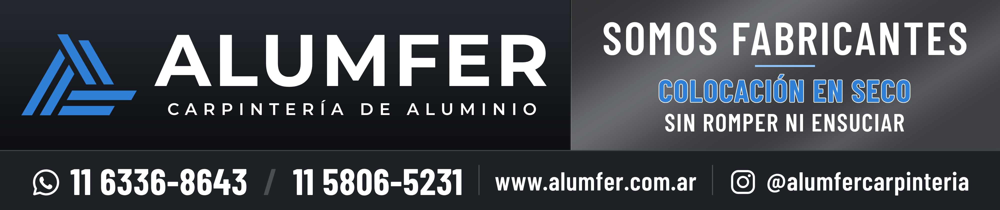

| Medida final (corte) | 200 × 42 cm cada uno |
| Sangrado | 3 cm por lado → tamaño total del archivo 206 × 48 cm |
| Cantidad | 1 de cada lado (son distintos: van espejados para que el logo quede hacia adelante) |
| Archivos a imprimir | IMPRENTA_Alumfer_camioneta_LADO_IZQUIERDO_conductor_206x48cm_TAMANO_REAL.pdf IMPRENTA_Alumfer_camioneta_LADO_DERECHO_vereda_206x48cm_TAMANO_REAL.pdf A tamaño real (1:1), 100 % vectoriales, tipografías incrustadas, línea de corte marcada (TrimBox) |
| Color de referencia | Azul Alumfer #2F7FD6 · Fondos grafito #121518 / #1E2227 y gris metalizado · Texto blanco |